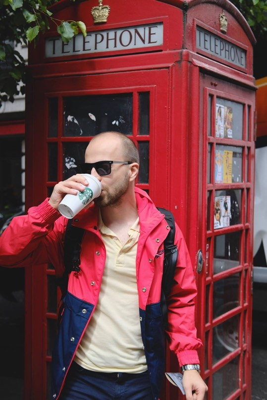

<main class="main about">
	<div class="container">
		<div class="row align-items-center about__avatar-block">
			<div class="col-md-2 mt-5 mb-4 mt-md-0 mb-md-0 text-right text-md-left"></div>
			<div class="col-md-5 about__avatar">
				
			</div>
			<div class="col-md-5 about__right">
				<h2><span class="color__reverse">Street</span> photographer</h2>
				<h4>Roma Tihiy  was born July 1993 in Ivano-Frankivsk. Tihiy is a false surname.</h4>
				<p>In the 9th grade in my house there was an ordinary digital girl, for which I was shooting absolutely everything. Subsequently, I got to my father "Zenith". But I really got into the picture when I saw the image appear on the white paper in the bathtub. I continued to remove my friends from time to time, but no more. After graduation I went completely to IT and for a long time I forgot about the photo.</p>
				<p class="mb-0">In the winter of 2017, I took up the camera. Began with the fact that I always took my old mirror with myself. On my way to work I took pictures of the city and people. I began to actively study the topic of street photography and watch the Western photographers.</p>
			</div>
		</div>
		<div class="row">
			<div class="col-md-8 offset-md-2 text-center">
				<h3 class="h3">Everything has beauty, but not everyone sees it.</h3>
			</div>
			<div class="col-md-12 text-center">
				
				<p><div class="line"></div> Roma Tihiy</p>
			</div>
		</div>
		<div class="row about__bottom-text">
			<div class="col-md-9 offset-md-2">
				<h5>Publications:</h5>
				<p>The New York Times, Esquire, El Mundo, The Atlantic, The Guardian, Forbes, Chicago Tribune, Los Angeles Times, Le Monde, Le Figaro, Liberation, Politiken, Bloomberg, Der Spiegel, Diario Digital.</p>
			</div>
			<div class="col-md-9 offset-md-2">
				<h5>Exhibitions:</h5>
				<p>2017 December- Photography of the city, Ivano-Frankivsk, Ukraine; <br/>
						2017 November - NU ART Gallery exhibition booth on PHOTO KYIV art-fair, Kyiv, Ukraine;</p>
			</div>
		</div>
		<div class="row justify-content-center">
			<ul class="bottom__nav text-center">
				<li><a href="#">instagram</a></li>
				<li><a href="#">facebook</a></li>
				<li><a href="#">flickr</a></li>
			</ul>
		</div>
	</div>
</main>